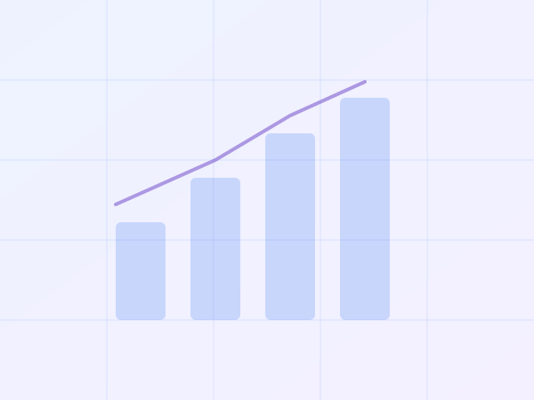

Editoria e giornalismo: report su statistiche ufficiali
Report generati con intelligenza artificiale su temi di interesse pubblico (divario retributivo di genere, spesa militare, natalità in Europa, spread BTP-Bund) costruiti su dati Eurostat, ISTAT, BCE, OCSE e Banca mondiale. Ogni report conserva le interrogazioni riproducibili e il registro delle operazioni.